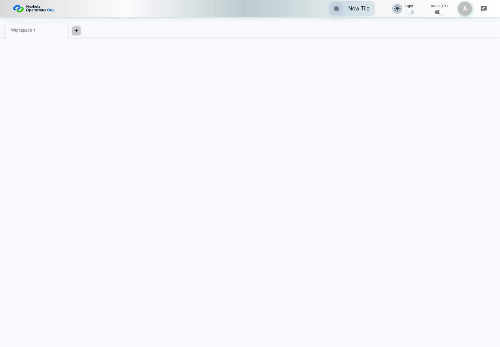

UI-PREF-002 theme selection and persistence
PASS · application/run-004/ui-pref-002-theme-selection-and-persistence-9ccbe02b7f30-attempt-1 · ACTUAL_APPLICATION_LOCAL_SERVICES
Actual current React with controlled login/validation and seeded empty workspace. Preference storage is real browser storage. Clock cases use Playwright clock.
2026-10-22T04:17:57.839Z to 2026-10-22T04:17:59.199Z
Assertions and result · Artifact manifest · Exact run inputs and source hashes
Result SHA-256:71241065cfd5e4351e087e370b5466b2c00d86f4ee1bc9c9921b015b9a0e8c3fScreenshot capture: CAPTURED. Named frames: 4.

The shell starts with its unchecked dark theme control.
2026-10-22T04:17:58.492Z · 1440×1000Step: UI-PREF-002 Given
SHA-256:
9bc8759e962166f07c72df94ef0c9decabfc8f9b30b28ca718da6c37578d9e2d
Light theme is selected before browser reload.
2026-10-22T04:17:58.598Z · 1440×1000Step: UI-PREF-002 Given
SHA-256:
f21193bad1c68bce785fa806f5b1fed86746e8c64995b92ab8bb72e7e69c1b03

Light theme is checked and the light label is visible.
2026-10-22T04:17:58.983Z · 1440×1000Step: UI-PREF-002 Then
SHA-256:
1c643be27734d2ea7261d81f0443e86d03d08add40c65aaca20d99001c98e803
The final visible state after the named test assertions.
2026-10-22T04:17:59.047Z · 1440×1000Step: Test source: /Users/lushevol/code/github/ratan-release-impact/workbench/e2e/audit-specs/preferences.spec.ts:9
SHA-256:
1c643be27734d2ea7261d81f0443e86d03d08add40c65aaca20d99001c98e803Screenshots establish visible state only. Assertions and traces support functional claims.